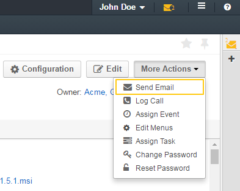
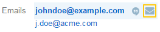
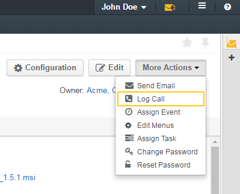
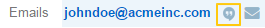
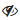

Actions with My User¶
Actions¶
Review Your Profile¶
- In the user menu, click My User.
- Review your profile settings. Please, see details in the My User Page section.
Edit Your Profile¶
In the user menu, click My User.
On your profile view page, click the Edit button in the upper-right corner of the page.
On the Edit My User page, click General and modify the following fields if required:
- Username—Type a name that the user will use to log into the system. This field is mandatory.
- Name Prefix—Type a name prefix of the user. A name prefix is used in front of the user’s name and provides additional information about the user.
- First Name—Type the first name of the user. You can use any number of characters of any alphabet in the name. This field is mandatory. A user’s first name is displayed on the interface when the user logs in.
- Middle Name—Type the middle name of the user.
- Last Name—Type the last name of the user. You can use any number of characters of any alphabet in the name. Together with the user’s first name, a user’s last name is displayed on the interface when user logs in.
- Name Suffix— Type a name suffix of the user. A name suffix is used after the user’s name and provides additional information about the user.
- Birthday—Click this field and select the user’s date of birth using a pop-up calendar. Alternatively, you can type the date in the format defined by your current locale (for more information about locales, see the Localization section).
- Avatar—Click Choose File to locate a user’s photo or another picture associated with the user on your computer or other device.
- Primary Email—Type the user’s main email address that will be used for communications. This field is mandatory.
- Emails—Click the Add Another Email button and type an additional email address in the field that appears. You can add as many email addresses as required. To delete an email address, click the x icon next to the email field you want to delete.
- Phone—Type the user’s phone number.
Click Additional and provide more information about you.
If you want to change your password, click Password and provide the following information:
- Password—Type your current password.
- New Password—Type a new password. Click the tooltip to learn more about what a password must consist of.
- Repeat New Password—Type the new password one more time to confirm it.
- Click Save or SaveClose in the upper-right corner of the page.
Generate an API Key¶
When the integration with a third-party software or other work requirements demand a user to have the API access to OroCRM, generate an API key. You can use this key to access API while protecting your password from being disclosed to the third party.
- In the user menu, click My User.
- On your profile view page, click General Information.
- Find the API Key field and click the Generate Key button next to it. A new API key appears. It will look similar to bba1b83312a50836d78cbef4d2705125a6ce1d4d.
After the API key is generated, you will be able to execute API requests via the sandbox, Curl command, any other REST client or use the API via the custom application.
Important
Please note that an API key must be generated within the organization the data of which it will be used to access. Therefore, before generating an API key, make sure that you are logged into the desired organization.
Within one organization there can be only one API key at a time.
Send an Email¶
You can send an email message to other users or external emails.
In the user menu, click My User.
On your profile view page, perform one of the following:
Click More Actions in the upper-right corner of the page and click Send Email on the list.
In the General Information section, find the Emails field, and point to one of your email address—actually the one that you want to use to send the email from. Click the Send Email icon that appears next to it.

In the Send Email dialog box, specify the required data. For help on this, see the Email guide.
- Click Send. The email will appear in the Activity section of the user view page.
Log or Make a Call¶
In the user menu, click My User.
On your profile view page, perform one of the following:
Click More Actions in the upper-right corner of the page and click Log Call on the list.
In the General Information section, find the Phone field, and point to a specified phone number. The Hangouts Call and Log Call icons appear next to it.
- Click the Hangouts Call icon to immediately call to the specified phone number.
- Click the Log Call icon to specify call details.

In the General Infromation section, find the Emails field, and point to the required email. Click the Hangouts Call icon that appears next to it.

If you used Log Call action button or icon, in the Log Call dialog box, specify the required data.
- Click Log Call to log a call, or click the Start button next to Hangouts label to start a hangout call. The call will appear in the Activity section of the user view page.
Important
- If you do not see icons and buttons that allow making Hangouts calls, make sure that the Hangouts functionality is enabled for the organization.
For more information about calls, see the Calls guide.
Assign an Event¶
- In the user menu, click My User.
- On your profile view page, click More Actions in the upper-right corner of the page and click Assign Event on the list.
- In the Assign Event To dialog box, specify the required data. For help on this, see the Calendar Events guide.
- Click Save. The event will appear in the Activities section of the page.
Assign a Task¶
- In the user menu, click My User.
- On your profile view page, click More Actions in the upper-right corner of the page and click Assign Task on the list.
- In the Assign Task To dialog box, specify the required data. For help on this, see the Tasks guide.
- Click Create Task. The task will appear in the Additional Information section, User Tasks subsection of the page.
Configure Interface, Email Settings and Integrations¶
Important
Note that configuration you set up will be applicable only for the current organization.
- In the user menu, click My User.
- On your profile view page, click Configuration in the upper-right corner of the page.
- On the Configuration page, in the left panel, click System Configuration. If required, make changes to your system configuration. For information about the fields, see the My System Configuration description.
- Click Save Settings in the upper-right corner of the page.
Change Your Password¶
In the user menu, click My User.
On your profile view page, click Edit.
On your profile edit page, click Password.
Provide the following information
- Password—Type your current password.
- New Password—Type a new password. Click the tooltip to learn more about what a password must consist of.
- Repeat New Password—Type the new password one more time to confirm it.
- Click Save or SaveClose in the upper-right corner of the page.
Change Your Password via Action Button¶
Important
This action is available only for administrators. However, it is recommended to follow the instruction provided in the Change Password action description.
- In the user menu, click My User.
- On your profile page, click More Actions in the upper-right corner of the page and click Change Password on the list.
- In the Change Password dialog box, type a new password. Alternatively, you can click the Suggest Password link to generate a secure random password. To see / hide the entered password, click the Show /  Hide icon next to the New password field.
- Click Save. The new password will be also sent to your primary email address.
Reset Your Password¶
Important
This action is available only for administrators.
- In the user menu, click My User.
- On your profile page, click More Actions in the upper-right corner of the page and click Reset Password on the list.
- In the Reset Password dialog box, click Reset. The password reset link will be sent to your primary email address.
Warning
You will be immediately logged out of the OroCRM and will not be able to log ib before your password is changed.